IT WILL HAPPEN
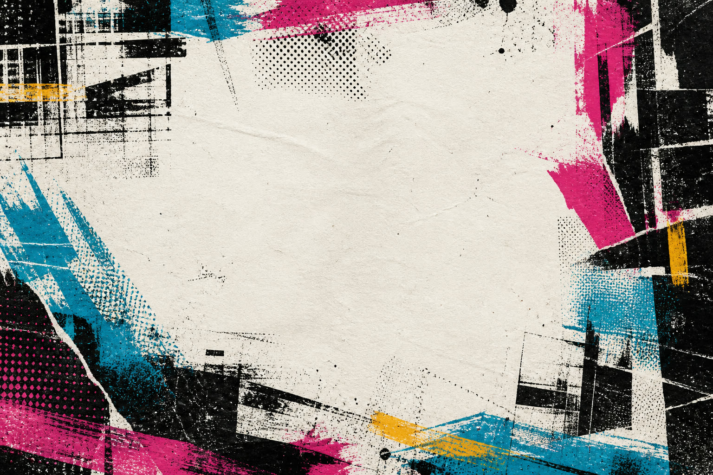
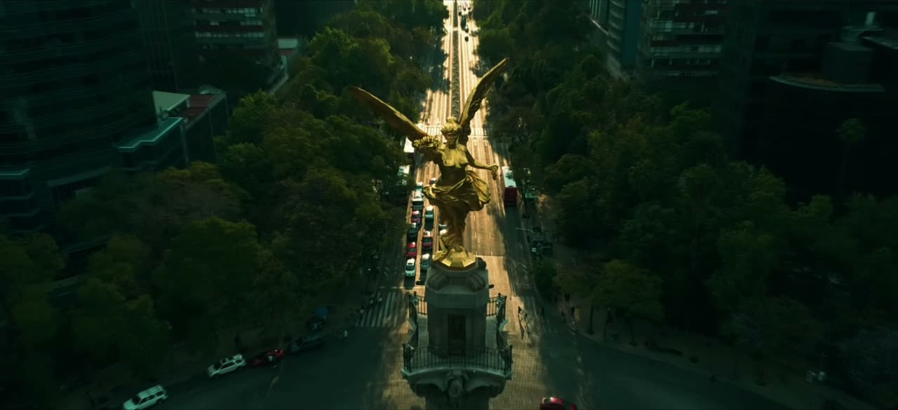
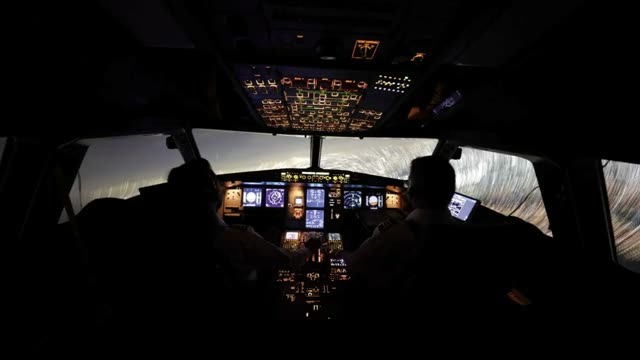
El Ángel
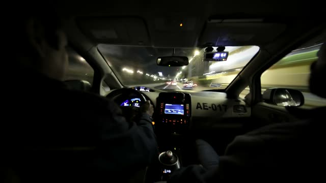
The standard of Miami.
Now in México.
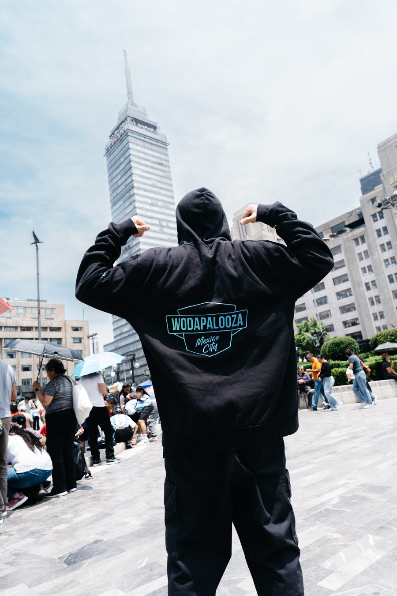
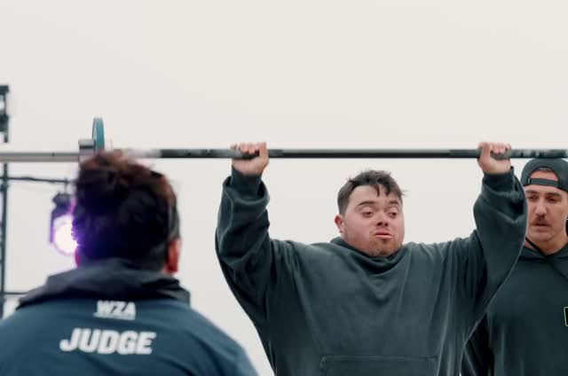
One figure · nine monuments · the city never stops
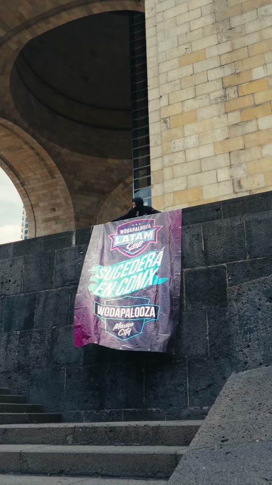
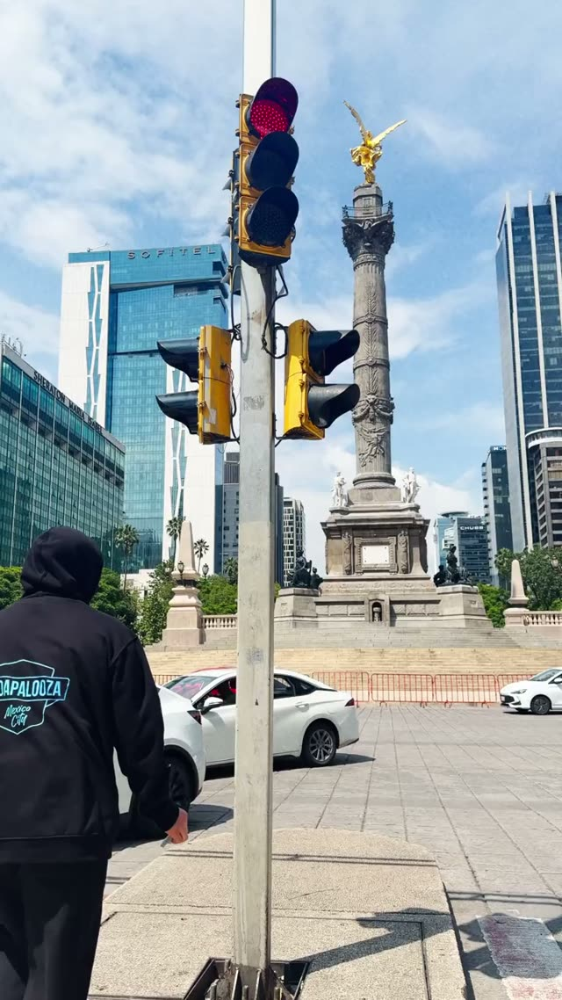
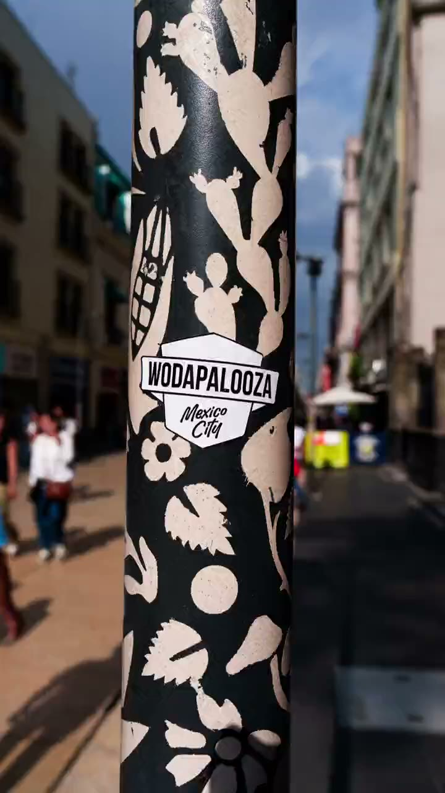
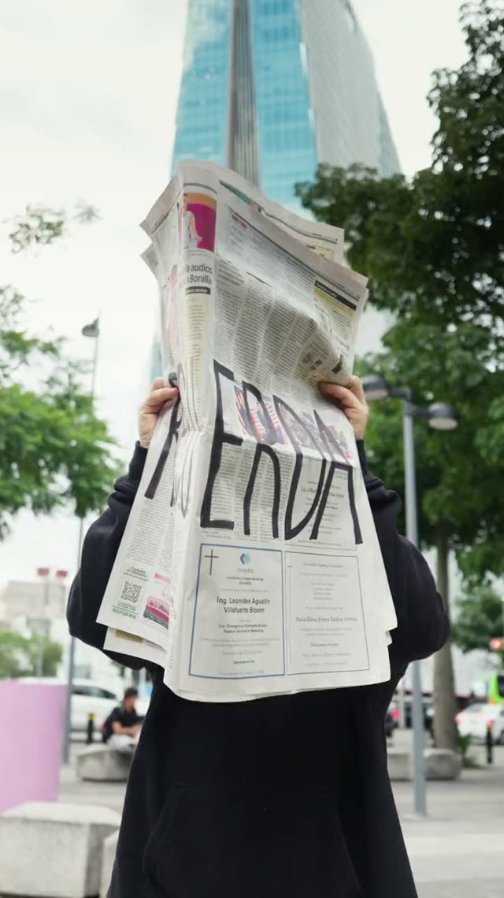
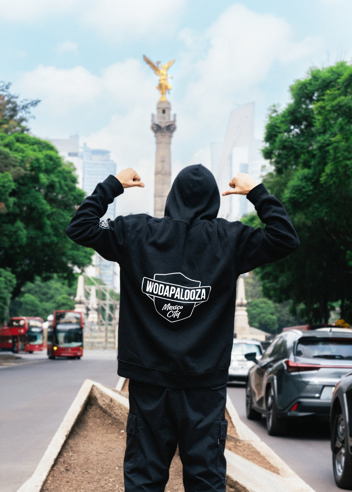
It’s time to earn your place.
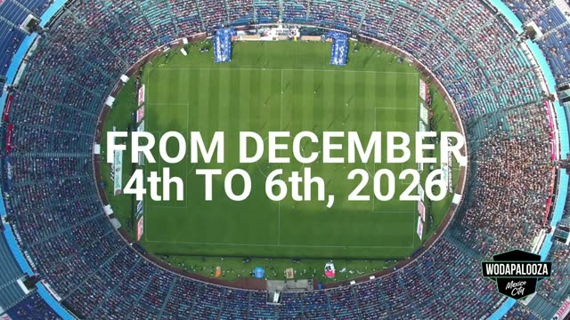
Celebrate fitness. Community. Life.
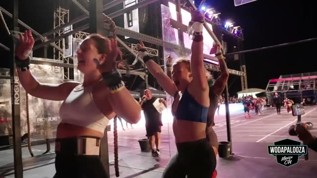
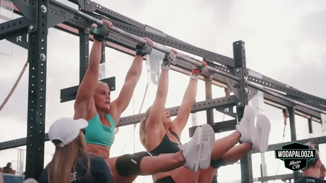
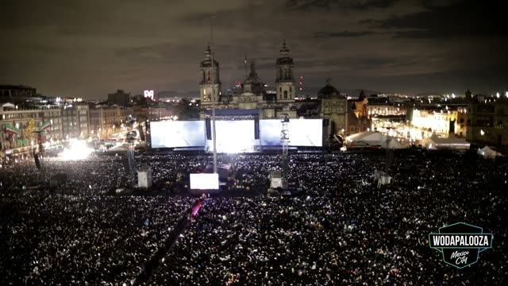
Ciudad de México
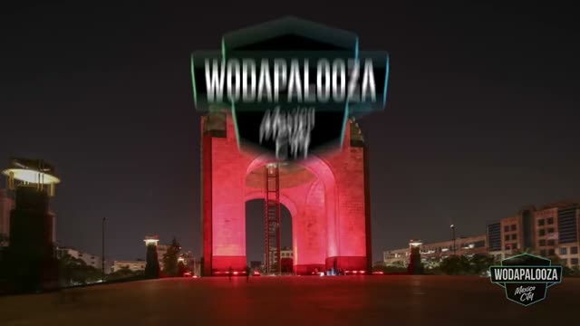
Choose your way in